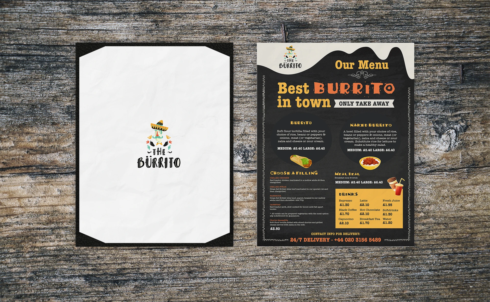

Dashboards & Systems
Enterprise dashboards, HRIS modules, internal systems, and websites from complex workflows to polished landing pages that drive results.
View projects →Hi, I'm Mariz
I design enterprise platforms, dashboards, internal systems, and websites that help people work better.
I'm Mariz, a UI/UX Designer with over 10 years of experience creating enterprise applications, dashboards, portals, and digital products. I help transform complex business requirements into intuitive and scalable user experiences.
Throughout my career, I've collaborated with stakeholders, business analysts, and development teams to deliver solutions across HRIS platforms, internal systems, corporate websites, and mobile applications from concept to implementation.
Beyond DesignHow I take a project from brief to a polished, production-ready experience.
Understanding requirements, goals, and user needs through stakeholder discussions. Outputs include defined objectives, user flows, and a clear design direction.
High-fidelity designs and prototypes built in Figma covering layouts, components, interactions, and responsiveness for stakeholder validation.
Designs translated into responsive, accessible interfaces using HTML, CSS, and JavaScript pixel-perfect and optimised across all screen sizes.
Working closely with backend developers on API integration, dynamic data states, and system logic to ensure seamless design-to-implementation handoff.
Reviewing the built interface against approved designs catching inconsistencies, fixing gaps, and applying final refinements for a polished user experience.
Continued support post-launch updates, improvements, and UI fixes based on real user feedback and evolving product needs.
Selected work areas shaped from your experience in enterprise UX, dashboards, websites, SharePoint pages, and product design.
Enterprise dashboards, HRIS modules, internal systems, and websites from complex workflows to polished landing pages that drive results.
View projects →
Designed and built responsive websites for businesses from luxury yacht charters to service landing pages. Focus on brand presentation, clear messaging, and performance.
View projects →
Produced a wide range of visual assets including marketing materials, promotional banners, social media graphics, branding, and print designs for various clients and campaigns.
View gallery →
Designed mobile applications with a focus on simple user flows, visual hierarchy, and smooth end-to-end experience across iOS and Android platforms.
View gallery →A decade of work across UI/UX, web design, graphic design, team leadership, and design quality review.
Led UI/UX design for HRIS modules, internal systems, and enterprise applications while collaborating with business analysts, stakeholders, and developers.
Designed mobile applications, corporate websites, product catalogs, SharePoint pages, and responsive digital experiences for selected clients.
Designed and built responsive websites, customized layouts, reviewed quality, and collaborated with teams to deliver effective digital solutions.
Created promotional banners, marketing materials, interface designs, landing pages, and led a small design team to ensure timely project delivery.
Produced marketing and promotional visuals for print, social media, campaigns, events, and branding initiatives.
Reviewed design submissions, supervised web artists, ensured quality standards, monitored productivity, and contributed to workflow improvements.
Available for opportunities
If you need a UI/UX Designer or UI Developer for enterprise platforms, dashboards, internal systems, or modern websites, I’d love to connect.